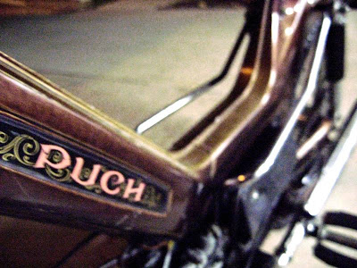

Yeah, Tom is right on that stuffs.
Newport and maxi frames are the same, with different stickers.
Maxi S tank sticker:

Newport tank sticker:

Both of those peds will have the same suspension, front and back.
The difference, like Tom said, is going to be the carb and intake. Honestly, you can get a 14mm bing and matching intake for cheap, so it shouldn't make or break the deal. The dumb way to check is to see if the stickers on them say 1hp (not likely), 1.5hp, or 2hp. If it's 1.5hp, here's how to make it 2hp:
//www.mopedarmy.com/wiki/Puch_horsepower_differencesI would go look at them if they're local, and take the nicest, most complete one that you can get for the least $$s. Everything is fixable/swappable, and Puchs have tons of parts available.
Main things to check:
- Gas tank rust. You can deal with it, but it's a big pain in the ass.
- Even if it's not running, spin the engine over. Make sure it's not seized, and listen for bearing noise. If it's noisy, at best it's got no tranny fluid and just needs some added. At worst it's $50 for new bearings and oil seals.
- Bent forks. Shiny chrome aftermarket ones are $99, and used old ones are cheaper, but it's a pain to swap them.
- Tires and tubes. See if the seller has replaced them or if they're the dry rotten originals. It's just a nice perk to get one with new tires and tubes. Saves you $70 or more, plus the work of doing it.
- Make sure the owner knew the thing was a 2 stroke and didn't run straight gas without oil. That would do nasty things.
Basically, unless the thing has been at the bottom of a lake for 30 years, it should be able to run again with minimal effort. Every moped I've bought has been easy to get going, usually in an afternoon.